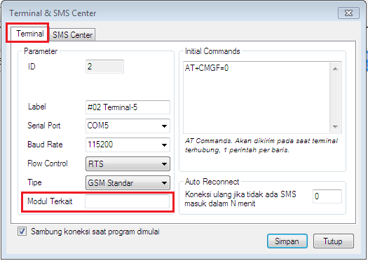
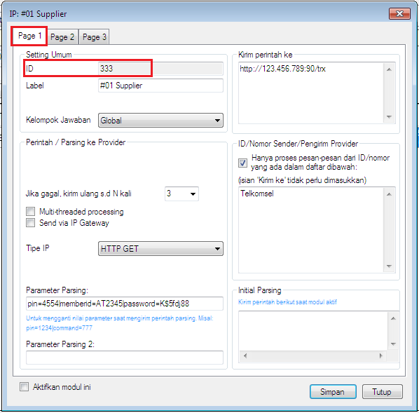
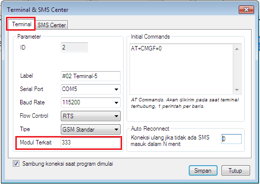

Modul Terkait
Fitur ini berada di modul Terminal -> klik kanan -> klik Setting -> tab: Terminal -> box: Modul Terkait dan mulai tersedia di v4.0.0 khusus OtomaX edisi Standard ke atas klik disini.

Berguna untuk menentukan modul online (IM Hybrid HTH atau IP Client) yang akan menerima balasan berupa SMS dari chip provider. Untuk tata cara penggunaannya sebagai berikut:
- Pastikan edisi OtomaX Anda adalah edisi Standard, Pro, Advanced, Enterprise atau Ultimate. Jika bukan, lakukan upgrade OtomaX dengan klik disini.
-
-
Pilih modul online -> klik kanan -> klik Setting -> tab: Page 1 -> catat ID modul yang berada di box: ID, di contoh ini ID-nya: 333

- Buat penangkap jawaban untuk menangani balasan berupa SMS dari chip provider klik disini dan pastikan tertaut ke modul online.
-
Pilih modul online -> klik kanan -> klik Setting -> tab: Page 1 -> catat ID modul yang berada di box: ID, di contoh ini ID-nya: 333
-
Pilih modul Terminal -> klik kanan -> klik Setting -> tab: Terminal pada box: Modul Terkait masukkan ID modul online yang telah dicatat diatas, yaitu 333.

Apabila modul online yang ingin dikaitkan lebih dari 1, pisahkan ID modul online dengan tanda koma, contoh: 333,12,34.
- Selesai.
Kini setiap ada balasan berupa SMS dari chip provider akan masuk di modul online dan dikenali sebagai balasan provider serta dapat diproses lebih lanjut dengan penangkap jawaban untuk menentukan status transaksi yang diproses oleh modul online.